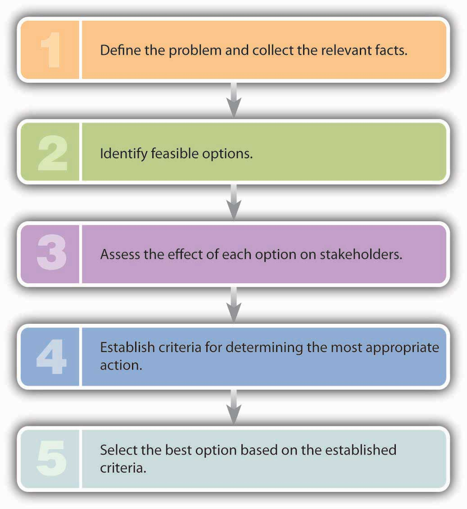
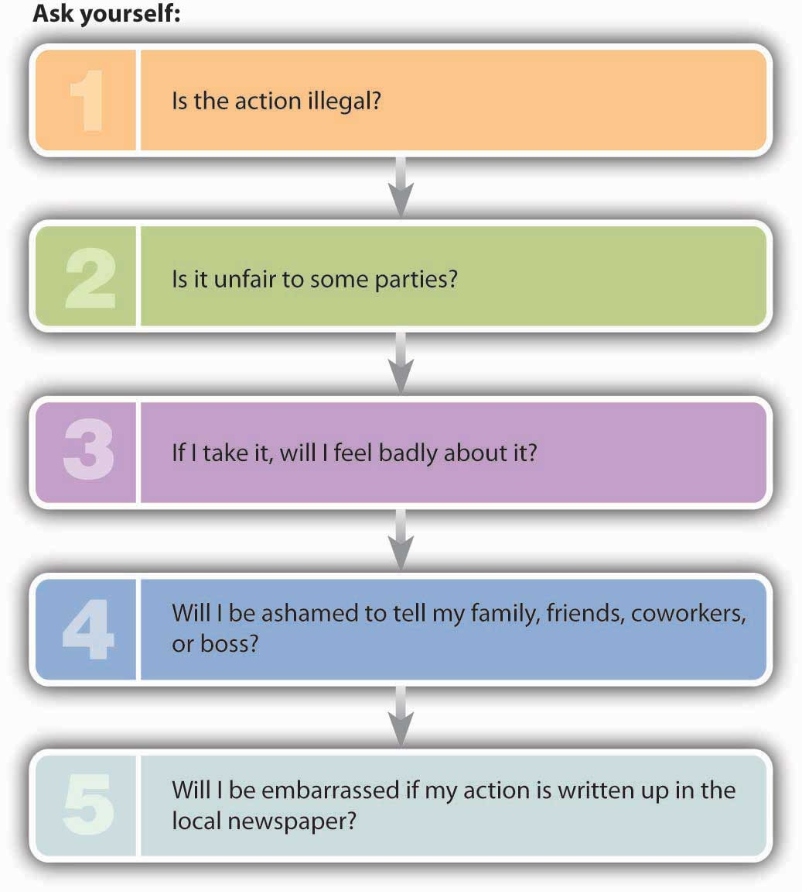

Betty Vinson didn’t start out at WorldCom with the intention of going to jail. She undoubtedly knew what the right behavior was, but the bottom line is that she didn’t do it. How can you make sure that you do the right thing in the business world? How should you respond to the kinds of challenges that you’ll be facing? Because your actions in the business world will be strongly influenced by your moral character, let’s begin by assessing your current moral condition. Which of the following best applies to you (select one)?
Now that you’ve placed yourself in one of these categories, here are some general observations. Few people put themselves below the second category. Most of us are ethical most of the time, and most people assign themselves to category number two—“I’m mostly ethical.” Why don’t more people claim that they’re always ethical? Apparently, most people realize that being ethical all the time takes a great deal of moral energy. If you placed yourself in category number two, ask yourself this question: How can I change my behavior so that I can move up a notch? The answer to this question may be simple. Just ask yourself an easier question: How would I like to be treated in a given situation?John C. Maxwell, There’s No Such Thing as “Business Ethics”: There’s Only One Rule for Making Decisions (New York: Warner Books, 2003), 19–21.
Unfortunately, practicing this philosophy might be easier in your personal life than in the business world. Ethical challenges arise in business because business organizations, especially large ones, have multiple stakeholders and because stakeholders make conflicting demands. Making decisions that affect multiple stakeholders isn’t easy even for seasoned managers; and for new entrants to the business world, the task can be extremely daunting. Many managers need years of experience in an organization before they feel comfortable making decisions that affect various stakeholders. You can, however, get a head start in learning how to make ethical decisions by looking at two types of challenges that you’ll encounter in the business world: ethical dilemmas and ethical decisions.
An ethical dilemmaMorally problematic situation. is a morally problematic situation: You have to pick between two or more acceptable but often opposing alternatives that are important to different groups. Experts often frame this type of situation as a “right-versus-right” decision. It’s the sort of decision that Johnson & Johnson (known as J&J) CEO James Burke had to make in 1982.See Tamara Kaplan, “The Tylenol Crisis: How Effective Public Relations Saved Johnson & Johnson,” http://www.personal.psu.edu/users/w/x/wxk116/tylenol/crisis.html (accessed April 24, 2006). On September 30, twelve-year-old Mary Kellerman of Chicago died after her parents gave her Extra-Strength Tylenol. That same morning, twenty-seven-year-old Adam Janus, also of Chicago, died after taking Tylenol for minor chest pain. That night, when family members came to console his parents, Adam’s brother and his wife took Tylenol from the same bottle and died within forty-eight hours. Over the next two weeks, four more people in Chicago died after taking Tylenol. The actual connection between Tylenol and the series of deaths wasn’t made until an off-duty fireman realized from news reports that every victim had taken Tylenol. As consumers panicked, J&J pulled Tylenol off Chicago-area retail shelves. Researchers discovered Tylenol capsules containing large amounts of deadly cyanide. Because the poisoned bottles came from batches originating at different J&J plants, investigators determined that the tampering had occurred after the product had been shipped.
So J&J wasn’t at fault. But CEO Burke was still faced with an extremely serious dilemma: Was it possible to respond to the tampering cases without destroying the reputation of a highly profitable brand? Burke had two options:
Burke opted to recall all 31 million bottles of Extra-Strength Tylenol on the market. The cost to J&J was $100 million, but public reaction was quite positive. Less than six weeks after the crisis began, Tylenol capsules were reintroduced in new tamper-resistant bottles, and by responding quickly and appropriately, J&J was eventually able to restore the Tylenol brand to its previous market position. When Burke was applauded for moral courage, he replied that he’d simply adhered to the long-standing J&J credo that put the interests of customers above those of other stakeholders. His only regret was that the tamperer was never caught.Yaakov Weber, “CEO Saves Company’s Reputation, Products,” New Sunday Times, June 13, 1999, http://adtimes.nstp.com.my/jobstory/jun13.htm (accessed April 24, 2006).
If you’re wondering what your thought process should be if you’re confronted with an ethical dilemma, you could do worse than remember the mental steps listed in Figure 2.3 "How to Face an Ethical Dilemma"—which happen to be the steps that James Burke took in addressing the Tylenol crisis.
Figure 2.3 How to Face an Ethical Dilemma
In contrast to the “right-versus-right” problem posed by an ethical dilemma, an ethical decisionDecision in which there is a right (ethical) choice and a wrong (unethical or illegal) choice. entails a “right-versus-wrong” decision—one in which there is a right (ethical) choice and a wrong (unethical or illegal) choice. When you make a decision that’s unmistakably unethical or illegal, you’ve committed an ethical lapseSituation in which an individual makes a decision that’s unmistakably unethical or illegal.. Betty Vinson, for example, had an ethical lapse when she caved in to her bosses’ pressure to cook the WorldCom books. If you’re presented with what appears to be this type of choice, asking yourself the questions in Figure 2.4 "How to Avoid an Ethical Lapse" will increase your odds of making an ethical decision.
Figure 2.4 How to Avoid an Ethical Lapse
To test the validity of this approach, let’s take a point-by-point look at Betty Vinson’s decisions:
So Vinson could have answered our five test questions with five yeses. To simplify matters, remember the following rule of thumb: If you answer yes to any one of these five questions, odds are that you’re about to do something you shouldn’t.
Like our five questions, some ethical problems are fairly straightforward. Others, unfortunately, are more complicated, but it will help to think of our five-question test as a set of signals that will warn you that you’re facing a particularly tough decision—that you should think carefully about it and perhaps consult someone else. The situation is like approaching a traffic light. Red and green lights are easy; you know what they mean and exactly what to do. Yellow lights are trickier. Before you decide which pedal to hit, try posing our five questions. If you get a single yes, you’ll be much better off hitting the brake.Online Ethics Center for Engineering and Science, “Advice from the Texas Instruments Ethics Office: What Do You Do When the Light Turns Yellow?” Onlineethics.org, http://onlineethics.org/corp/help.html#yellow (accessed April 24, 2006).
Such a dilemma is often characterized as a “right-versus-right” decision and is usually solved in a series of five steps:
If you’re presented with what appears to be an ethical decision, asking yourself the following questions will improve your odds of making an ethical choice:
If you answer yes to any one of these five questions, you’re probably about to do something that you shouldn’t.
Explain the difference between an ethical dilemma and an ethical decision, then provide an example of each. Describe an ethical lapse and provide an example.